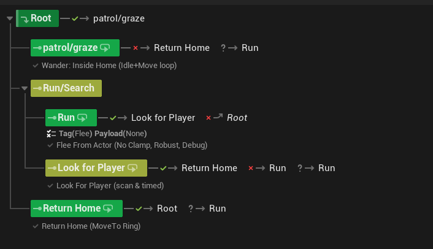

StateTree-driven animal AI, network-safe and data-driven
This AI chicken uses Unreal Engine 5's StateTree to drive clean, data-driven behavior switching (idle, wander, flee, death) while remaining fully server-authoritative and multiplayer-safe. The character owns its health and leash data, while the StateTree reacts purely to replicated state and gameplay events.


Key design points:
- Server-authoritative AI: All state changes originate on the server and replicate cleanly to clients.
- Event-driven StateTree: AI reacts to gameplay events instead of polling or ticking heavy logic.
- Safe multiplayer startup: Clients only start StateTree logic once replicated leash data is valid.
- Component-based health: Death, cleanup, and destruction are handled through a reusable HealthGauge component.
- Easy to extend with new animals or behaviors
- State logic lives in data, not hardcoded branches
- Predictable replication and debugging
void AChicken::SetLeash_Implementation(
const FVector& Center,
float Radius,
AActor* SpawnerOwner)
{
if (!HasAuthority())
return;
HomeLocation = Center;
WanderRadius = Radius;
bLeashActive = true;
OwningSpawner = SpawnerOwner;
if (StateTreeComponent)
{
StateTreeComponent->SendStateTreeEvent(
FStateTreeEvent(
FGameplayTag::RequestGameplayTag(
FName("AI.Event.SetLeash"))));
}
GetWorldTimerManager().SetTimerForNextTick([this]()
{
if (StateTreeComponent && !StateTreeComponent->IsRunning())
{
StateTreeComponent->StartLogic();
}
});
}